NAD - NOMAD ADVENTURE DIVERS. Could it live up to its name? Well, Folks, let me say this right up front. This report will provide you with almost no negatives to consider. Our two-week stay at the NAD Lembeh Resort could not have been more wonderful. So, where to begin? Let's start with that very first impression that one gets upon arrival.
After long and arduous days of travel ......
Plover to Madison, Wisconsin, USA
Madison to Minneapolis, Minnesota, USA
Minneapolis to San Francisco, USA
San Francisco to Jakarta, Indonesia
Jakarta to Manado
.......we arrived in Manado where we were met by NAD Resort staff at Bitung Harbor. After a short, beautiful boat ride from the Harbor we arrived at the Resort, nestled between two hills inside a tranquil bay. It is a sight like this that breathes new life into weary travelers.
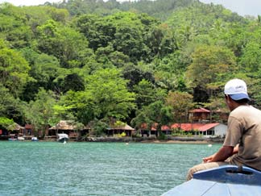
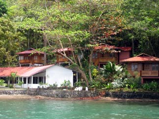
ARRIVING AT LAST
TEN ROOMS AND FOUR BUNGALOWS
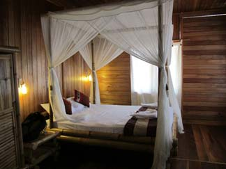
CAROLYN AND GEORGE OPTED FOR A BUNGALOW.
I CHOSE AN EQUALLY COMFORTABLE, BUT LESS EXOTIC ROOM.
We were treated to a cool drink as Serge, Manager of Dive Operations, provided an overview of the resort layout, schedule, dive op, meal routine, and checked dive certifications. We then retreated to our air-conditioned rooms where our bags awaited us.
We explored the grounds before dinner and were delighted to find all kinds of nooks and crannies where one could find a comfortable place to be in solitude or to mingle with other guests and staff.
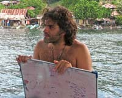
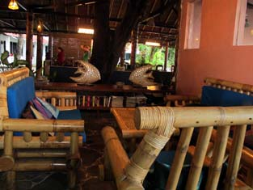
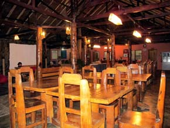
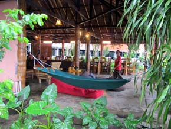
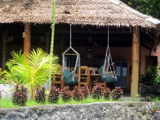
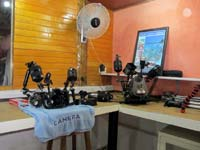
The dry, Camera Room provided ample space and electrical outlets, high work tables, and towels where one could set up and store camera equipment. Similarly, the computer room was lined with high tables, stools, two computers, outlets for personal computers, a resource library, and lounge furniture.
Next on the agenda - dinner. The dining room is open air with a long table capable of seating all guests. What a wonderful opportunity to meet the neighbors and share stories of the day's diving. A menu announced the specialties available for us at each meal, and food was served buffet style. Each meal was a delicious adventure of flavor and color and cuisine; the quantity and variety satisfactory to even the pickiest eater.
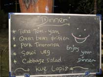
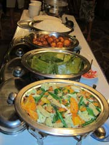
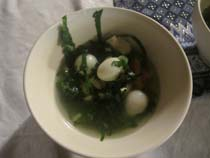
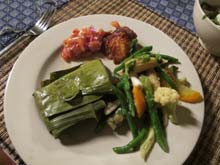
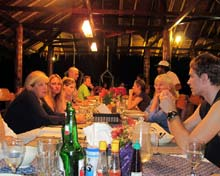
So with all of our physical needs met to great satisfaction, let's talk about what we're all here for -- the diving! Lembeh Island is known for its muck diving and vast array of critters. So, here is the one shortcoming that might be perceived by some. You will generally not be diving colorful reefs, and you will not likely encounter large pelagics. In Lembeh, you dive the ocean bottom, and you meet the small and smaller ocean critters. It is a macro photographer's dream -- and I didn't wake up for two, glorious weeks!
Boarding our dive boat, Stargazer, we enter a covered area with cubbies for personal belongings and baskets under the seats for our dive gear. Camera rinse tanks are nearby. Each diver has a personal gear basket which is toted to and from the boat by the dive staff. Following each dive day, gear is rinsed and hung/placed carefully for drying. Boat towels are marked with your room number; fresh water, tea, coffee, fruit or pastries are available. As you pass through this covered area, there is open deck space, a tank and gear-up station, and an area where the staff assembles and prepares to meet your every dive need.
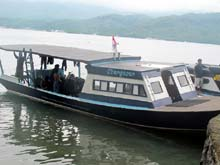
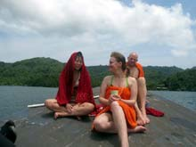
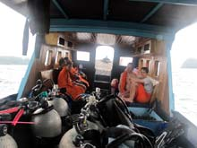
At the dive site one of the guides offers a thorough dive briefing which is accompanied by a site map. Dives are generally 75 minutes in length, followed by a full hour surface interval. There are two morning dives and an afternoon dive. Night dives and shore dives are also options. Each group has its own dive guide, and we fell in love with our Joni (pronounced jah-nee). Always a bright smile and witty comment, Joni had the eye of an eagle. I swear he could spot a 1/2-inch critter 3 meters away! I sometimes could not keep up with his spotting. Still photographing one incredible creature, he was off finding another. He also took great joy in helping me to finesse my strobe when I was struggling with lighting. Free instruction - you can't beat that. The visibility was generally good, and there were no significant currents. After a week of incredible dives and sightings, I figured that we had seen it all. But each day brought yet another new critter. It was so amazing that I have to share the list with you. A slideshow of pictures follows this report.
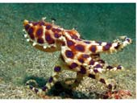
Three Blue-Ring Octopi Orange Frogfish
Napoleon Shrimp
Humpback Scorpionfish
Banggai Cardinalfish
Robust Ghost Pipefish
Foot-long Pipehorse
Porcelain Crabs
Variety of Cleaner Shrimp
Harlequin Shrimp Pair
Bubble Coral
Razorfish
White Devil Scorpionfish
Bannerfish
Grey Shaggy Frogfish
Red-Lined Sea Cucumber
Starfish Shrimp and Shell
One-Inch Serpia Cuttlefish
Wonderpus Octopi
Seahorse
Red-Banded, Purple Bodied Shrimp
Box Crab
Map Puffer
Tiger Shrimp
Spotted Sweetlips
Varieties of Lionfish
Lemon Goby Pair
Spinecheek Anemonefish
Black-Saddle Snake Eel
Black-and-White Mantis Shrimp
Lembeh Sea Dragons
Stargazer
Bubble Decorator Crab
Boxfish/Cowfish
Skeleton Shrimp with Eggs
Leechhead Slug
Coconut Octopus that tires of us, gathers two shell halves, sits on one, and pulls the other over its head!
Crab wearing Upside-Down-Jellyfish
Mantis Shrimp Charging Camera!
Map Puffer with Eggs
Siagiani Hairy Squat Lobster
Fibriated Moray
Long Nose Shrimp
Hairy Shrimp
Pygmy Cuttlefish 'Zapping' Food
Nudibranch Eggs
Upside-Down Jellyfish
Giant Yellow Frogfish
Skunk Clownfish
Network Pipefish
Crown of Thorns Starfish
Mantis Shrimp With Eggs
Coconut Octopus
Ghost Pipefish
Hairy Cowry
A Rainbow of Tunicates
Whip Coral Shrimp
Basket Star
Slender Filefish
Black-Finned Snake Eel
Ribbon Eel
Warty Frogfish
Sea Cucumber Crab
Feather Stars Feeding
Orangutan Crabs
Golden Cuttlefish
Anemone Crabs
Galletea Elegans Squat Lobster
Big Eye Soldierfish
Fang Blennies
Reticulated Starfish
Snapper Juvenile
Hairy Frogfish
Flounders
Halimeda Crabs
Fingertip Dragonet
Red Night Shrimp
Flamboyant Cuttlefish
Whip Coral Shrimp
Cockatoo Waspfish
Burrfish
Snowflake Eel
Pygmy Dragonet
Ghost Pipefish with Eggs
Flame Helmet Snail
Coleman's Pygmy Seahorse
Harlequin Snake Eel
Juvenile Flying Gurnard
Trailing Nudibranchs
School of Striped Catfish
Crocodile Flathead
Mandarinfish
Juvenile Golden Cuttlefish Bargibanti Pygmy Seahorse
Mimic Octopus
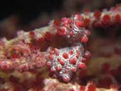
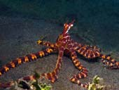
White Painted Frogfish
Barrimundi
Walking Crinoids
Napoleon Snake Eel
Moorish Idols
Clark Anemonefish
Tube Anemone
Big Eye Goby
Sand Perch
Red Cushion Starfish
Feather Pen
Toby
Tomato Anemonefish
Juvenile Ribbon Eel
Stargazer with Lure Out
Yellow Shaggy Frogfish
Rare, White Halimeda Pipefish
Cardinalfish at Mouth of Anemone
Decorator Crab With Fire Urchin Atop
Friendly, Large Cuttlefish
Tigertail Sea Cuke With Shrimp Pair
Ornate Ghost Pipefish Pair
Golden Puffer
Black-Spotted Puffer
Sweetlips Juvenile
Orange Scorpionfish
Banded Pipefish With Eggs
Yellow Crinoid Shrimp
Tiger Shrimp Pair
Nudibranchs:
Chromodoris-kuniei
Chromodoris-annae
Chromodoris-fidelis
Chromodoris-magnifica
Flabellina-exoptata
Halgerda batangas
Halgerda okinawa
Jorunna-parva
Nembrotha
Tambja-gabrielae
Chromodoris-kuniei
Janolus
Tyroli
Ceratosoma
Chromodoris Rudiani And more, too numerous to mention
And this, my Friends, is a list of only those creatures that I took photos of and can identify or describe! Just another glorious day in paradise. But I can't end this report without introducing you to the rest of the leadership team that makes NAD-Lembeh so very special.
You've met Serge (above), Manager of Dive Operations, and delightfully sassy, Jack-of-All-Trades. Then there's always-smiling and efficient Linda, Office Manager. And the heart of the resort - Owner/Operators, Simon and Zee. I was so impressed with how this young couple manages and operates NAD. Everything runs like a well-oiled machine. The Resort is well designed and well cared for, and they have never-ending ideas for additions, improvements and upgrades. They are available to each guest and respond quickly to any need or request. The relationship between Simon, Zee, their Managers and other staff seems based on a sense of family and mutual respect. They are engaged with guests and work side-by-side with staff whether the project be preparing for dinner, building a new dock, or planting flora. Perhaps this next observation best depicts who they are as people and managers: NAD-Resort hires two shifts of kitchen staff so that their employees
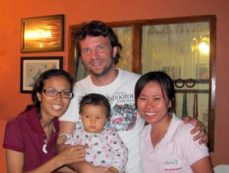
ZEE, SIMON, BELLA, LINDA
can work reasonable hours and attend to their families as well as their careers! You don't see this type of consideration often; and as a workers' rights activist, that warmed my heart. The other heart-warmer is daughter, Bella, just eight months old at the time of our visit and the apple of everyone's eye. Thanks to each of you for an outstanding trip. I can't wait to return.
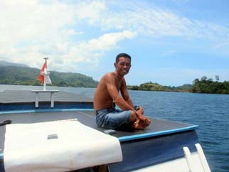
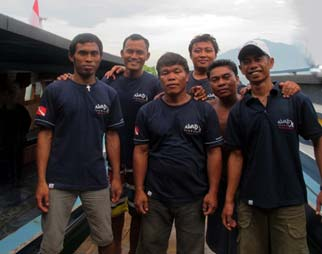
JONI
STARGAZER CREW
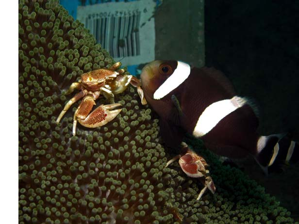
Unlike diving a beautiful coral wall, muck diving is all about scouring the ocean floor to discover its many, magical residents. Here we have a lovely Clark Anemonefish (cousin of Nemo), two Porcelain Crabs, and a discarded water bottle. This is muck diving.